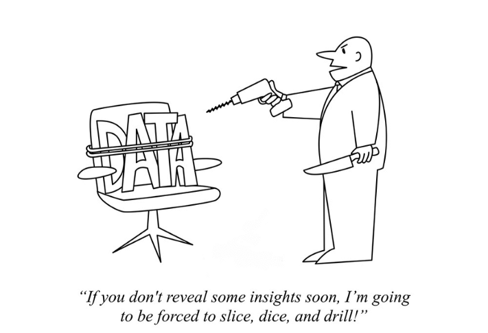
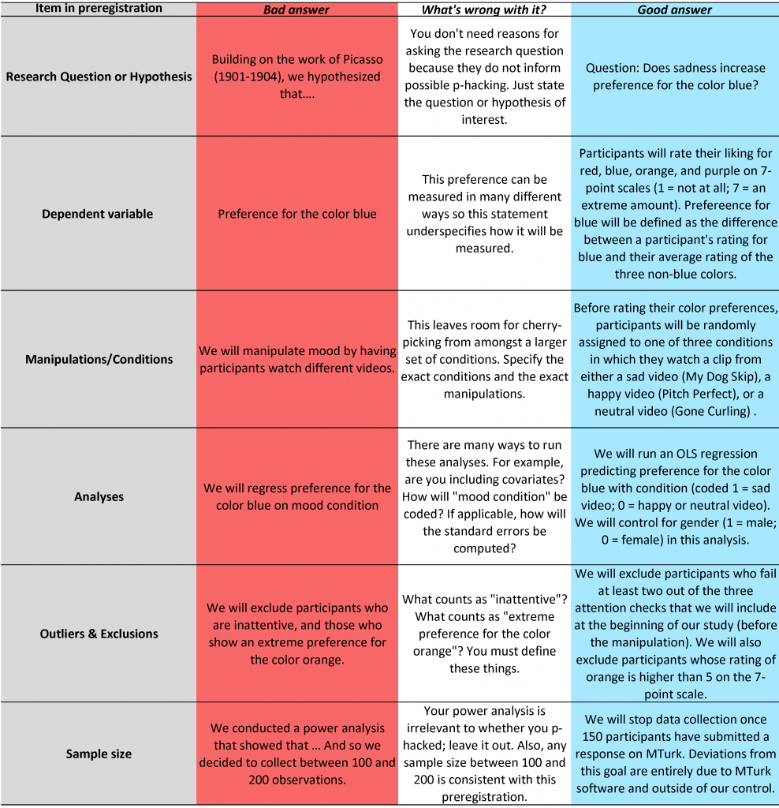
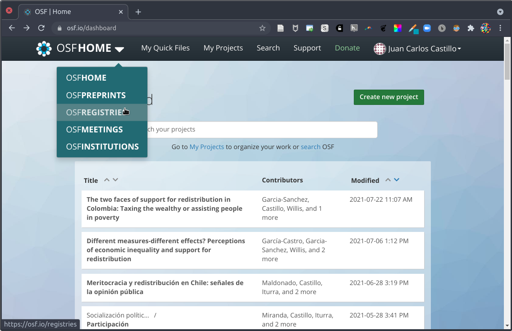
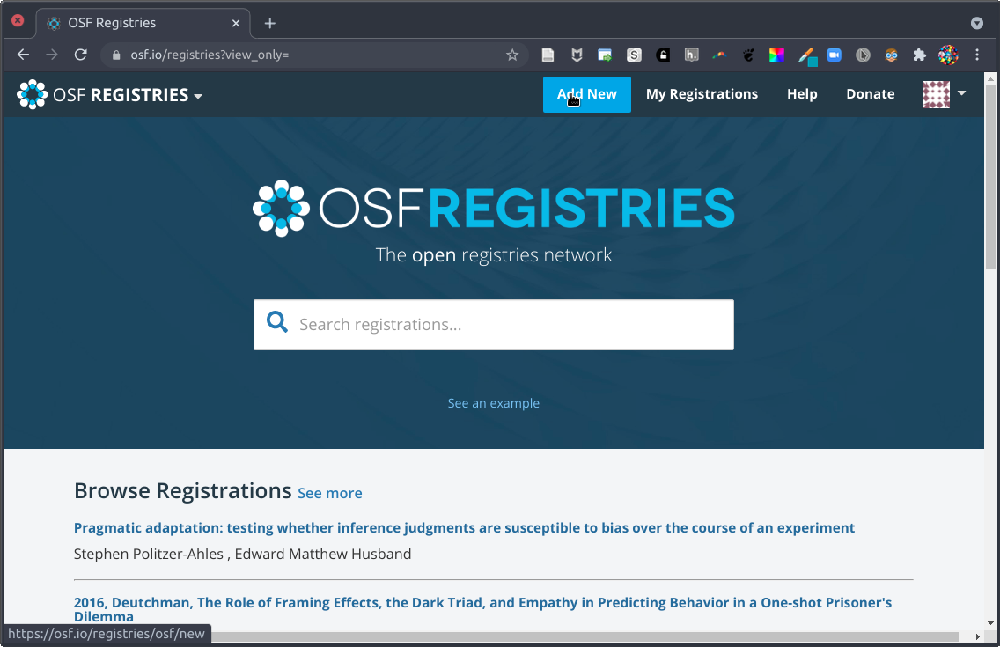
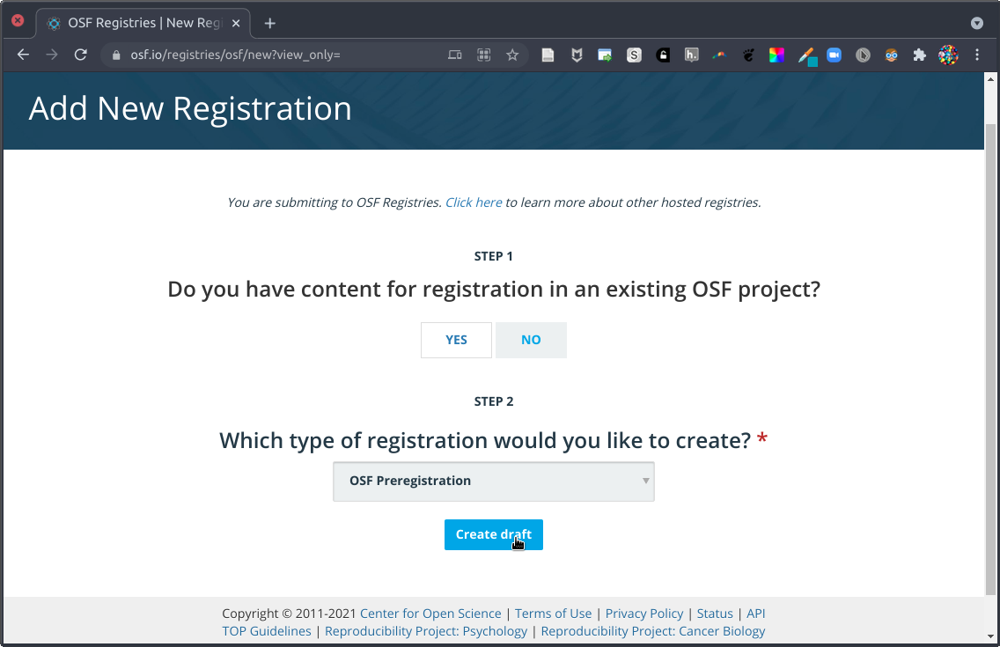

Ciencia Social Abierta
Sesión 7: Preregistros y Open Science Framework (OSF)
Juan Carlos Castillo & Tomás Urzúa
Sociología FACSO UChile
Primer Semestre 2026
Objetivos de aprendizaje
Al final de esta clase podrán:
- Explicar por qué los preregistros mejoran transparencia y credibilidad.
- Identificar componentes mínimos de un preregistro de investigación.
- Crear un preregistro básico en OSF usando una plantilla.
Contenidos
1. Resumen y conexión con la sesión anterior
2. Reportes y exploración
3. Preregistros
4. Plantillas y OSF
5. Anotación web con hypothes.is
6. Actividad aplicada
Contenidos
1. Resumen y conexión con la sesión anterior
2. Reportes y exploración
3. Preregistros
4. Plantillas y OSF
5. Anotación web con hypothes.is
6. Actividad aplicada
1) Resumen y conexión con la sesión anterior
Resumen rápido
- Ciencia abierta busca mejorar acceso, trazabilidad y reproducibilidad.
- Publicar resultados no basta: también importa cómo se generan.
- Necesitamos distinguir decisiones previas de decisiones post hoc.
- Preregistrar ayuda a transparentar el proceso analítico.
Pregunta guía de hoy
¿Cómo evitamos presentar análisis exploratorios como si fueran hipótesis definidas desde el inicio?
Contenidos
1. Resumen y conexión con la sesión anterior
2. Reportes y exploración
3. Preregistros
4. Plantillas y OSF
5. Anotación web con hypothes.is
6. Actividad aplicada
Caso de ejemplo
- Se plantea hipótesis: mujeres obtienen menores ingresos.
- El resultado inicial no es significativo.
- Se recodifica ingreso, se eliminan outliers y luego aparecen resultados significativos.
- Después se excluye subgrupo de mujeres y la significación aumenta aún más.
¿Cuál es el problema?
- Cambios analíticos después de observar resultados.
- Riesgo de sesgo por decisiones oportunistas.
- Mayor probabilidad de falsos positivos.
Algunas malas prácticas
- HARKing: formular hipótesis después de conocer resultados.
- p-hacking: probar múltiples especificaciones y reportar solo las favorables.
- Omisión de resultados nulos o inconsistentes.
Consecuencia metodológica
El problema no es explorar datos, sino no distinguir entre exploración y prueba de hipótesis.
Si realizamos muchas pruebas, la probabilidad acumulada de error tipo I aumenta: \(P(error) = 1 - (1 - \alpha)^k\).
Visualización del problema

Contenidos
1. Resumen y conexión con la sesión anterior
2. Reportes y exploración
3. Preregistros
4. Plantillas y OSF
5. Actividad aplicada
3) Preregistros
¿Qué es un preregistro?
- Es un plan de estudio registrado antes de analizar los datos.
- Queda fechado y con historial de modificaciones.
- Permite separar decisiones a priori de decisiones exploratorias.
- Puede ser público inmediato o con embargo temporal.
Ventajas principales
- Transparencia del proceso de investigación.
- Mayor credibilidad de hallazgos confirmatorios.
- Mejor planificación del análisis y del reporte.
- Facilita evaluación por pares y replicación.

Lo clave: no prohíbe explorar
Preregistrar no impide explorar datos. Exige reportar con claridad qué parte es confirmatoria y qué parte es exploratoria.
Metáfora de investigación


Tipos de preregistro
- Preregistro estándar (sin revisión): plan registrado en plataforma.
- Registered report: revisión previa al levantamiento/análisis con aceptación condicional.
- Preregistro de replicación: enfoque específico en reproducir estudios previos.
Contenidos
1. Resumen y conexión con la sesión anterior
2. Reportes y exploración
3. Preregistros
4. Plantillas y OSF
5. Anotación web con hypothes.is
6. Actividad aplicada
4) Plantillas y OSF
¿Para qué sirven las plantillas?
- Estandarizan campos mínimos de información.
- Guían la formulación de hipótesis y análisis.
- Reducen ambiguedad y omisiones en el plan.
Campos típicos de un preregistro
- Pregunta y justificación teórica.
- Hipótesis y operacionalización.
- Datos: muestra, criterios de inclusión/exclusión.
- Estrategia de análisis y manejo de datos faltantes.
- Resultados esperados y límites del diseño.
Ejemplo de estructura de plantilla

Alternativa 1: AsPredicted
Alternativa 2: Open Science Framework (OSF)
- Plataforma integral para gestionar proyectos de investigación.
- Permite preregistros independientes o vinculados a proyectos existentes.
- Ofrece múltiples plantillas y opciones de visibilidad.
- Facilita organización de archivos, versiones y colaboración.
Flujo básico de preregistro en OSF
- Crear cuenta y proyecto en OSF.
- Ir a la sección de preregistration.
- Seleccionar plantilla acorde al estudio.
- Completar campos y revisar coherencia interna.
- Registrar con fecha y definir visibilidad/embargo.
Interfaz OSF: ejemplo 1

Interfaz OSF: ejemplo 2

Interfaz OSF: ejemplo 3

Buenas prácticas al completar un preregistro
- Escribir hipótesis observables y falsables.
- Justificar criterios de exclusión antes del análisis.
- Dejar explícita la estrategia de robustez.
- Registrar desviaciones del plan en el reporte final.
Contenidos
1. Resumen y conexión con la sesión anterior
2. Reportes y exploración
3. Preregistros
4. Plantillas y OSF
5. Anotación web con hypothes.is
6. Actividad aplicada
5) Anotación web con hypothes.is
Comentar sitios web con Hypothes.is
Hypothes.is permite anotar y discutir textos directamente sobre páginas web y PDFs.
- Útil para lectura guiada en clase.
- Permite comentarios individuales o por grupos.
- Deja evidencia del proceso de lectura y argumentación.
Paso 1: Crear cuenta
- Ir a web.hypothes.is y seleccionar la opción de registro.
- Completar correo, usuario y contraseña.
- Confirmar el correo para activar la cuenta.
Paso 2: Instalación y configuración
- Instalar la extensión de navegador desde hypothes.is.
- Aceptar permisos de la extensión.
- Crear o unirse a un grupo privado del curso si es necesario.
Paso 3: Comentar una web
- Abrir cualquier sitio web o PDF.
- Activar el panel de Hypothes.is (icono en la barra).
- Seleccionar texto, escribir comentario y etiquetar.
- Elegir visibilidad: público o grupo privado del curso.
Usos recomendados en docencia
- Preguntas de lectura obligatoria sobre papers o noticias.
- Comentarios entre pares para discusión previa a clase.
- Marcado de conceptos clave, métodos y evidencia empírica.
- Revisión crítica de fuentes y trazabilidad de argumentos.
Contenidos
1. Resumen y conexión con la sesión anterior
2. Reportes y exploración
3. Preregistros
4. Plantillas y OSF
5. Anotación web con hypothes.is
6. Actividad aplicada
6) Actividad aplicada
Trabajo en grupos (20 minutos)
Objetivo: crear un preregistro breve del proyecto grupal y dejarlo publicado en OSF (o en borrador con captura de avance).
- Definir una pregunta de investigación concreta del proyecto.
- Redactar una hipótesis principal y una secundaria.
- Especificar muestra, variables y criterios de exclusión.
- Escribir plan de análisis en 5-7 pasos.
- Ingresar la información en plantilla OSF y compartir enlace/captura.
Producto esperado
- Enlace al proyecto o preregistro en OSF.
- Documento breve con hipótesis y plan analítico.
- Nota de 3-4 lineas: principal dificultad y solución adoptada.
Referencias recomendadas
Cierre
- Preregistrar no reemplaza teoría ni criterio: los hace visibles.
- Diferenciar exploración de confirmación mejora la calidad de evidencia.
- La transparencia metodológica es parte central de la ciencia social abierta.

Ciencia Social Abierta | FACSO 2026 | © Hecho en Quarto